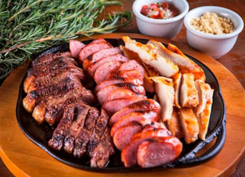

Menu
Churrasco completo na air fryer

Se você não tem churrasqueira em casa, sabia que dá para preparar um churrasco completo na air fryer? O melhor de tudo é que não deixa sujeira e fica pronto em menos de 1 hora. Esta receita é feita com contrafilé, linguiça toscana de pernil e pão de alho.
Se você quiser incrementar o churrasco, pode preparar farofa e vinagrete de acompanhamentos. Confira o passo a passo completo e saiba como fazer!
Ingredientes
- 65 gramas de maionese
- 30 gramas de manteiga
- 10 gramas de salsinha picada
- 3 dentes de alho picado
- Pimenta-do-reino a gosto
- Sal a gosto
- 700 gramas de contrafilé bovino
- Sal grosso a gosto
- 2 unidades de linguiça toscana de pernil
- Manteiga derretida a gosto para pincelar a carne
Modo de Preparo
-
Em um recipiente, misture maionese, manteiga, salsinha, alho, pimenta-do-reino e sal. Corte o pão francês e coloque a mistura no recheio e na cobertura.
-
Tempere o contrafilé com sal grosso e coloque na cesta da air fryer junto com as linguiças. Leve para assar no aparelho preaquecido a 180 graus Celsius por 10 minutos.
-
Após o tempo, vire a carne e as linguiças. Derreta manteiga a gosto, pincele na carne e leve para assar na air fryer por mais 10 minutos.
-
Coloque os pães e asse por mais 5 minutos na air fryer. Sirva em seguida.